Main¶
Source directory: examples/main/.
01_DamBreak¶
-
3-D dam-break flow impacting a structure, with velocity, pressure and force computed numerically. Watch on YouTube
-
High-resolution 3-D dam-break simulation (10M and 20M) for multi-GPU execution.
-
2-D dam-break simulation with validation data from the experiment of Koshizuka and Oka (1996). Watch on YouTube
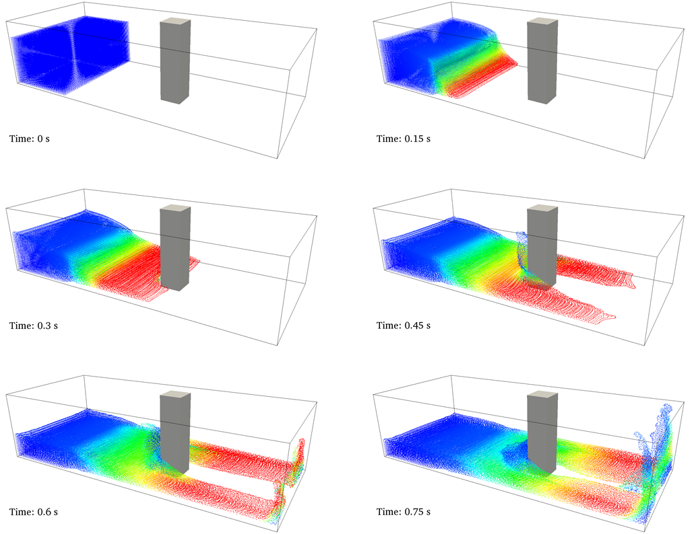
02_Periodicity¶
- 2-D case with periodicity in the X direction. The density diffusion term is applied. Watch on YouTube
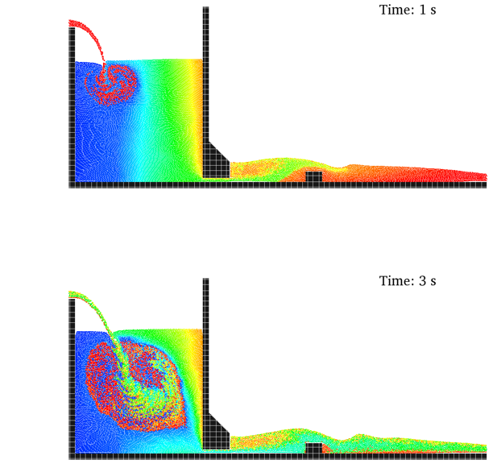
03_MovingSquare¶
- 2-D case with a square undergoing rectilinear motion. This example has no gravity; parameter “b” must be specified by the user. Shifting is used for this internal flow (no free-surface detection is required). Watch on YouTube
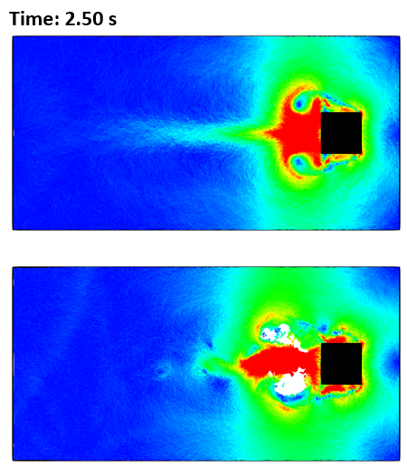
04_ExternalForces¶
- External acceleration is loaded from a file and applied to two different volumes of fluid. The density diffusion term is applied. Watch on YouTube
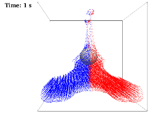
05_SloshingTank¶
-
2-D sloshing tank with rotational motion read from a file. Watch on YouTube
-
2-D sloshing tank with external acceleration read from a file. Validation against SPHERIC Benchmark #10, with pressure computed. The density diffusion term is applied.
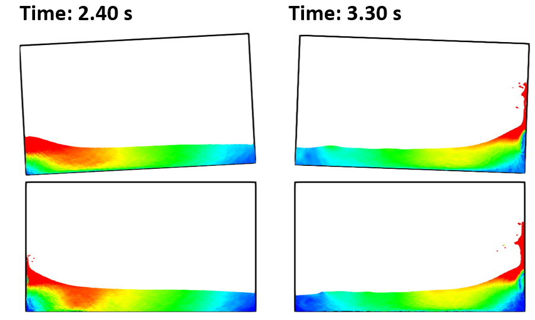
06_Wavemaker¶
- 3-D tank with periodicity in the Y direction and a piston with sinusoidal motion. The density diffusion term is applied. Watch on YouTube
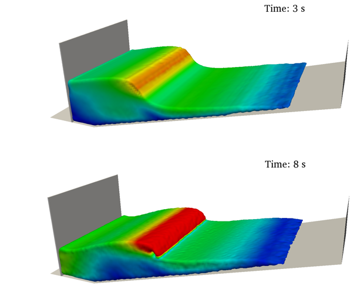
07_WavemakerFile¶
- 2-D tank with piston motion loaded from an external file and an external structure (STL). Validation data are from the CIEMito experiment: wave surface elevation and the force exerted on the wall are computed numerically. Watch on YouTube
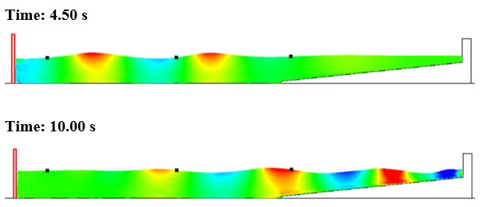
08_WavesFlap¶
-
2-D regular waves generated with a flap and compared with 2nd-order wave theory (beach). Watch on YouTube
-
2-D irregular waves generated with a flap and compared with 2nd-order wave theory (beach).
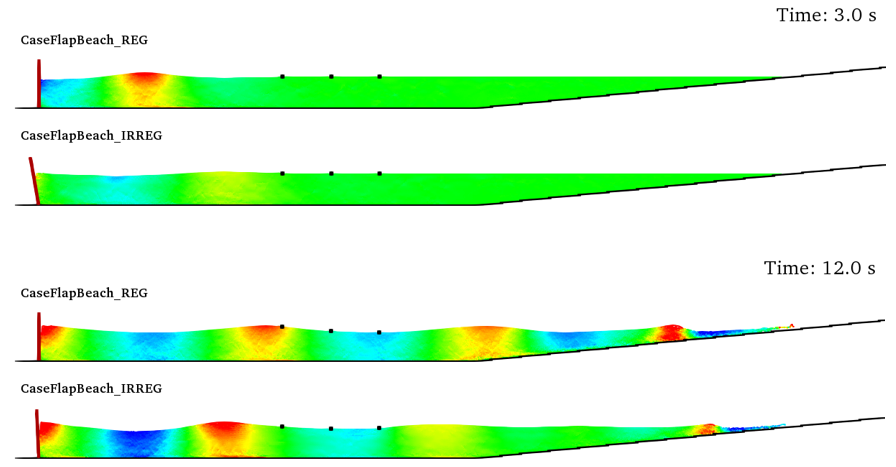
09_WavesPiston¶
-
2-D regular waves generated with a piston and compared with 2nd-order wave theory (beach and damping). Watch on YouTube
-
2-D irregular waves generated with a piston and compared with 2nd-order wave theory (beach and damping). Watch on YouTube
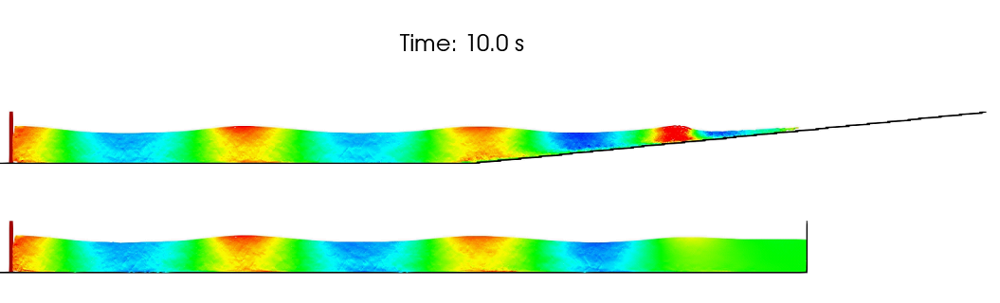
10_WavesPistonAWAS¶
-
2-D regular waves generated with a piston and interacting with a vertical wall, with and without AWAS. Forces on the wall and dike with and without AWAS are compared. Watch on YouTube
-
2-D regular waves generated with a piston and interacting with a trapezoidal dike, with and without AWAS. Forces on the wall and dike with and without AWAS are compared. Watch on YouTube
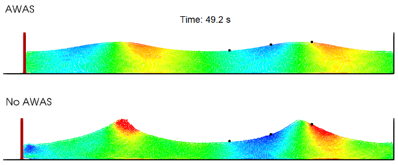
11_Floating¶
-
3-D floating box in a wave tank with periodicity in the Y direction and a piston with sinusoidal motion. Delta-SPH is used. Watch on YouTube
-
2-D falling sphere using laminar+SPS viscosity. Validation data are from Fekken, 2004 and Moyo and Greenhow, 2000. Watch on YouTube
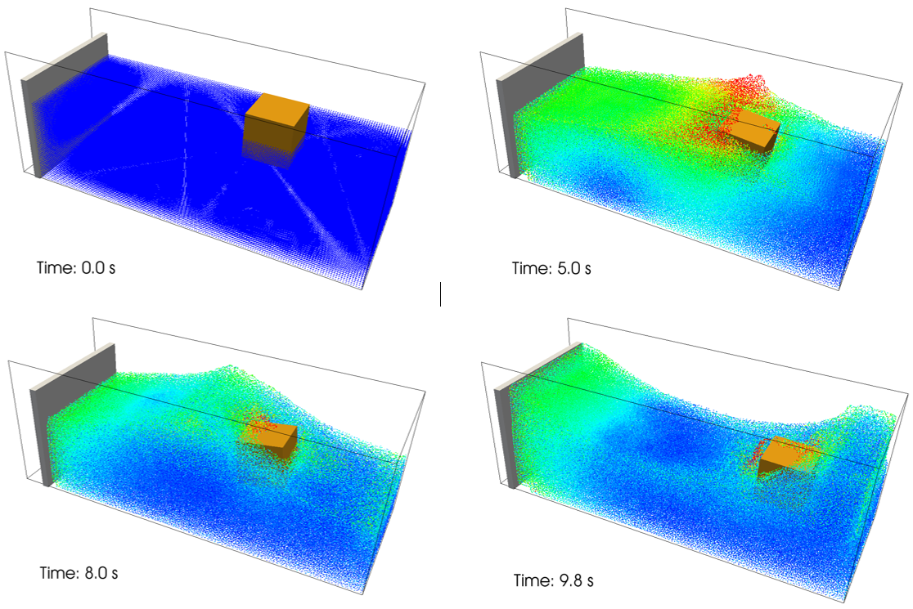
12_FloatingWaves¶
-
2-D floating box under the action of non-linear waves generated by a flap whose rotational motion is read from a file; laminar+SPS viscosity is used. Validation data for the box motions are from Hadzic et al., 2005. Watch on YouTube
-
2-D floating box under the action of regular waves generated by a piston. Validation data for the box motions are from Ren et al., 2015. Watch on YouTube
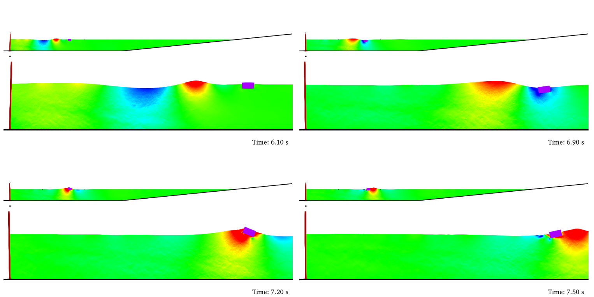
13_Pump¶
- 3-D external geometries (STL) are imported and the filling algorithm is used. Rotational motion is imposed. Watch on YouTube
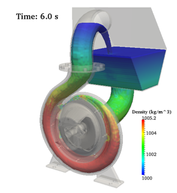
14_DEM¶
-
2-D DEM-only case of a ball impacting blocks, without fluid particles. Watch on YouTube
-
3-D dam-break flow with blocks, where interactions between blocks and with walls are modelled using DEM and material properties. Watch on YouTube
-
2-D case with 2000 floating objects interacting through the DEM approach. Watch on YouTube
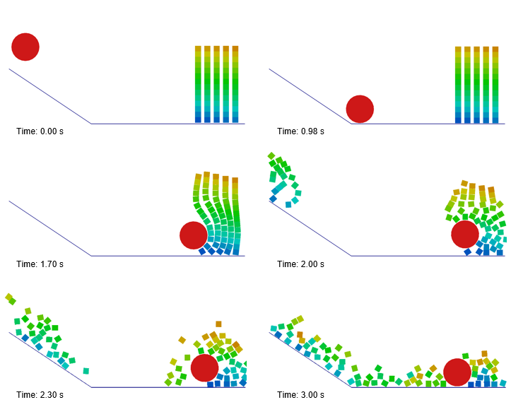
15_Poiseuille¶
- High-resolution 2-D Poiseuille flow with laminar+SPS viscosity. Watch on YouTube
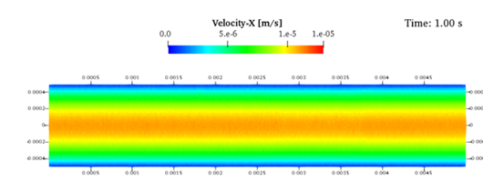
16_SolitaryWaves¶
-
2-D solitary wave generated using 3 different theories. Watch on YouTube
-
2-D case of triple solitary waves. Watch on YouTube
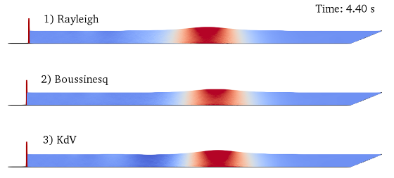
17_WaveRunup¶
-
3-D regular waves interacting with a layer armour breakwater (STL)
-
A gauge system is used to compute run-up. Validation data from CIEMito include wave surface elevation and wave run-up. Watch on YouTube
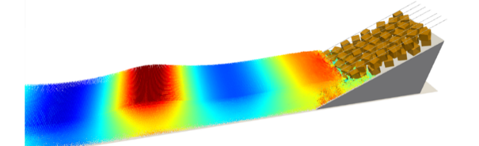
18_Bathymetry¶
-
2-D simulation of regular waves using bathymetry automatically generated from XYZ points. Watch on YouTube
-
3-D bathymetry automatically generated from XYZ points for open periodic conditions.
-
3-D bathymetry automatically generated from XYZ points for a closed domain. Watch on YouTube
-
3-D bathymetry in a closed domain with high resolution (12M) for multi-GPU execution.
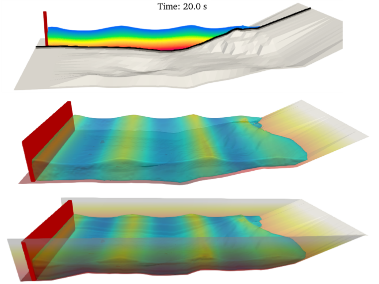
19_FocusedWaves¶
- 2-D focused waves are generated with a piston following the NewWave theory Whittaker et al. 2017. Watch on YouTube
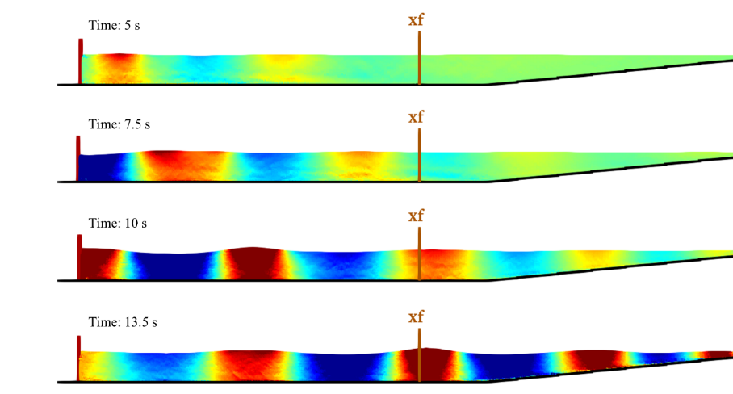
20_Damping¶
-
2-D wave absorption using numerical damping. The simplest case. Watch on YouTube
-
3-D simulation with numerical damping in the form of an angle. Watch on YouTube
-
Numerical damping for box-shaped tanks. Watch on YouTube
-
Numerical damping for cylinder-shaped tanks. Watch on YouTube
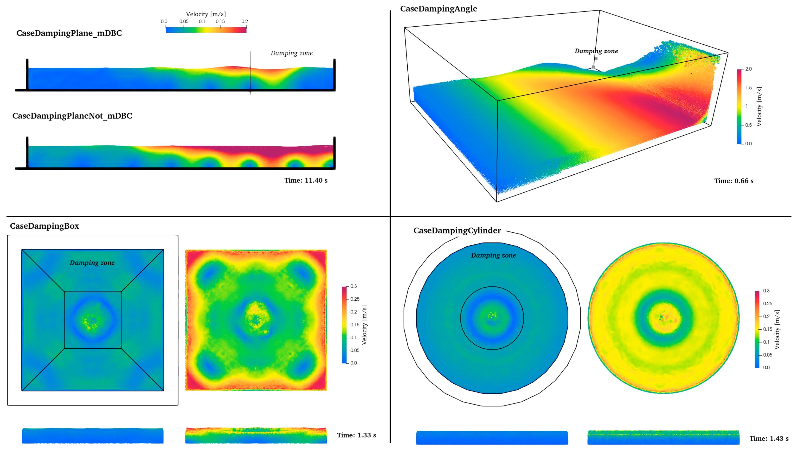